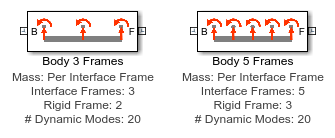

Flexible Body from Finite Element Data
Models a flexible body using a deflection model that relies on data imported from finite element software. Body deflection is superimposed on rigid body motion. The mass of the body can be assigned to the rigid body or distributed across each interface frame.
Contents
Model
Diagram
The following diagram shows the generic structure of the body represented by these blocks. Each frame (represented by the triad) can move along 6 degrees of freedom with respect to the rigid body. The amount it moves is calculated using data supplied by finite element software and entered in the block mask.
With three interface frames:

With five interface frames:

Parameters, Tab Mass
Body Mass Distribution
- Single - Body mass and inertia is assigned to a single rigid body. A minimal amount of mass and inertia is assigned to each interface frame to ensure there are no degenerate mass errors.
- Per Interface Frame - Body mass and inertia is distributed across the individual reference frames. The distribution is defined by parameter Properties in group Body Mass Per Interface Frame which is exposed if this option is selected.
These parameters are exposed if Body Mass Distribution is set to Single
- Mass: Mass of body
- Center of Mass: Location of undeformed body center of mass
- Moments of Inertia: Moments of inertia for undeformed body
- Products of Inertia: Products of inertia for undeformed body
- Cube Side Length: Determines minimum inertia at interface frame
- Cube Mass: Minimum mass at interface frame
These parameters are exposed if Body Mass Distribution is set to Per Interface Frame
- Properties in group Body Mass Per Interface Frame Requires a structure array of length equal to the number of interface frames and with the following fields:
- offset: 3-vector of translational offset of the rigid body piece's reference frame relative to the interface frame
- dim: 3-vector of dimensions of the "brick" graphic to associate with the interface frame
- mass: mass of the rigid body piece associated with the interface frame
- com: 3-vector of center of mass
- moi: 3-vector of moments of inertia
- poi: 3-vector of products of inertia
Parameters, Tab Geometry
Rigid Body File Name: String with name of geometry file for rigid body. Can be STL or STEP file.
The following values can be defined for the rigid body solid, the interface solids, and the graphic representing the interface frame.
Color: 3-vector with values between 0-1 defining color of rigid body solid [RGB]
Opacity: Scalar value between 0-1 defining opacity
Parameters, Tab Interface
Rigid Body Frame: Index of interface frame to which the rigid body part of the subsystem is rigidly attached. Deformations are zero at that point since the rigid body serves as the reference with respect to which deformations are measured.
Interface Frame Locations: Array of size n x 3, where n is the number of interface frames, containing the locations relative to the reference frame of the body in its undeformed configuration and with components resolved into that same frame. These coordinates must be consistent with the locations of the boundary nodes selected in the FEA software when generating the Craig-Bampton reduced model.
Parameters, Tab Deformation
Stiffness Matrix: Reduced stiffness matrix obtained by transforming the full global stiffness matrix by the Craig-Bampton matrix.
Mass Matrix: Reduced mass matrix obtained by transforming the full global stiffness matrix by the Craig-Bampton matrix.
Modal Damping Parameter: Optional parameter used to calculate the damping matrix for the substructure. This must be a scalar non-negative number, or 0 if there is no damping in the substructure. If Modal Damping Parameter is positive, then the damping matrix for the substructure is calculated by the block using these steps:
- Perform a modal reduction to compute the free vibration modes and natural frequencies associated with the mass and stiffness matrices;
- Form the damping matrix in the modal space;
- Transform it back to the Craig-Bampton degree-of-freedom space so it can be used in conjunction with the provided mass and stiffness matrices.
Frame Dof Indices: Array of size n x 6, where n is the number of interface frames, containing for each of frames F1 through Fn the 6 indices for the 6 translational and rotational degrees-of-freedom corresponding to that boundary node in the dof vector associated with the reduced mass and stiffness matrices.
Filter Time Constant: Time constant associated with filters that break algebraic loops due to direct feedthrough between the Simscape Multibody part of the flexible body subsystem and the Simulink state-space part of the subsystem. The time constant should be set low enough to be able to capture the frequencies present in the system. A value that is too high can also make the simulation numerically unstable. However, setting its value too low can negatively impact simulation performance, so it is important to try and balance these criteria.
C-B Transformation Matrix: Optional parameter that can expand the output vector coming out of the state-space system to include additional outputs computed by recovering deformations at points other than the interface frames using the Craig-Bampton transformation matrix. If it is not provided, enter the empty matrix [].
C-B Transformation Matrix Indices for Logging: Optional parameter that can select outputs computed by recovering deformations at points other than the interface frames using the Craig-Bampton transformation matrix. If it is not provided, enter the empty matrix [].